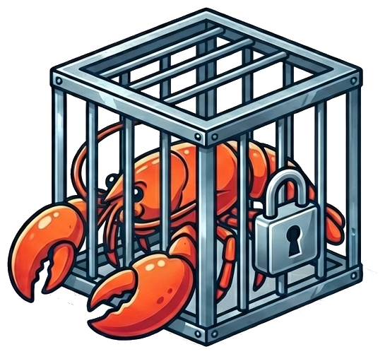

Don't let your agent phone home.
Defense-in-depth proxy sandbox for AI agents. Your agent runs on an internal-only network with no internet gateway; the only way out is through an inspecting proxy that scans every HTTP request before forwarding it.
curl -fsSL https://raw.githubusercontent.com/agentcage/agentcage/master/install.sh | sh
The Problem
Most agent deployments hand the agent three things that, combined, create an exfiltration risk most setups have zero defense against.
API keys, tokens, and credentials injected directly into the agent's environment.
Unrestricted outbound connectivity to any server on the internet.
Arbitrary code execution with full access to the local filesystem.
Defense-In-Depth
Every HTTP request passes through multiple independent inspection layers. A failure in any one layer doesn't compromise the others.
Agent on a Podman --internal network with no internet gateway. The only path out is through the inspecting proxy.
Pluggable inspector chain on every HTTP request, WebSocket frame, and DNS query. 5 built-in inspectors plus custom extensions.
Agent gets placeholders, proxy swaps in real values outbound and redacts inbound. The agent never holds real secrets.
19 regex patterns for common secret formats, Shannon entropy analysis, content-type mismatch detection, and base64 blob scanning.
Allowlist-based dnsmasq sidecar. Non-allowlisted domains resolve to a placeholder IP, keeping SSRF guards functional.
If the proxy goes down, the agent gets connection errors — not unfiltered internet. All hardening is on out of the box.
How It Works
Agent, DNS sidecar, and inspecting proxy on an internal network with no internet gateway.
The agent sends an HTTP request. It has no internet gateway — traffic can only reach the proxy container.
The dnsmasq sidecar resolves domains against the allowlist. Non-allowlisted domains get a placeholder IP.
mitmproxy runs the inspector chain: domain filtering, secret injection, regex scanning, entropy analysis, and custom inspectors.
Clean requests are forwarded to the internet. Suspicious requests get a 403 with a JSON explanation. All decisions are audit-logged.
Isolation Modes
Same inspection logic, different isolation boundaries. Container mode for development, Firecracker for production.
Rootless Podman
Hardware Virtualization
Built On
Security Coverage
How agentcage maps to the 2026 OWASP agentic risk categories. See the full threat model for details.
| OWASP Risk | Coverage | How |
|---|---|---|
| ASI01 Agent Goal Hijack | Out of scope | agentcage inspects network traffic, not agent intent |
| ASI02 Tool Misuse | Strong | Domain allowlist, WebSocket inspection, DNS filtering limit reachable services |
| ASI03 Identity / Privilege Abuse | Strong | Secret injection prevents agent from holding real credentials |
| ASI04 Supply Chain | Strong | Pinned image digests, pinned deps, inspector path validation |
| ASI05 Code Execution | Strong | Read-only rootfs, dropped capabilities, no-new-privileges |
| ASI06 Memory Poisoning | N/A | agentcage doesn't manage agent memory |
| ASI07 Inter-Agent Comms | N/A | Single-agent scope |
| ASI08 Cascading Failures | Strong | Fail-closed on proxy down, systemd auto-restart, per-host rate limiting |
| ASI09 Human Trust | Strong | Persistent structured audit logging with all decisions logged by default |
| ASI10 Rogue Agents | Strong | Network isolation, multi-layer inspection, DNS filtering, WebSocket inspection |
Setup Guides
Pre-built scaffolds with sensible defaults for popular AI agents. Run agentcage init --list-scaffolds to see all available options.
Full-featured AI coding agent with browser UI, device pairing, and web search integration.
--scaffold openclawUltra-lightweight AI agent gateway. ~10 MB image, ~10-20 MB RAM. Minimal footprint.
--scaffold picoclawAgent framework that spawns nested containers. Podman-in-podman with Docker CLI shim.
--scaffold nanoclawQuick Start
curl -fsSL https://raw.githubusercontent.com/agentcage/agentcage/master/install.sh | sh
agentcage init myapp --scaffold openclaw
agentcage secret set myapp ANTHROPIC_API_KEY
agentcage secret set myapp OPENCLAW_GATEWAY_PASSWORD
agentcage cage create -c cage.yaml
Fork the repo, create a feature branch, add tests, and submit a PR. Keep changes focused — one concern per PR.
Do not open a public issue for security vulnerabilities. Email security@agentcage.ai instead. You will receive an acknowledgment within 48 hours.